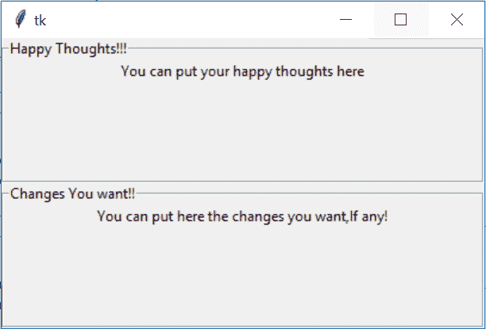

Tkinter LabelFrame小部件
在本教程中，我们将介绍 Python 中的 Tkinter LabelFrame 小部件及其语法和几个示例。LabelFrame 小部件主要用于在子小部件周围绘制边框。
这个小部件是一个边框的容器小部件，是用来将相关的小部件分组到一个 Tkinter 应用中，为用户提供更好的用户体验。
例如，我们可以使用 labelframe 小部件对应用中使用的单选按钮小部件进行分组。
还可以为 LabelFrame 小部件添加一个标题(我们将在代码示例中看到这一点)。
标签框架小部件是框架小部件的一个变种，它具有框架的所有特征。
注意: 如果你已经使用 HTML 进行网页开发，那么标签框架就和 HTML fieldset 标签一样。
Tkinter LabelFrame Widget
标签框架小部件的语法如下。让我们看看:
w = LabelFrame(master, option=value)
在上面的语法中，master参数表示父窗口。您可以使用许多options来配置标签框架，这些选项被写成逗号分隔的键值对。
Tkinter LabelFrame Widget 选项:
以下是标签框架小部件使用的各种选项:
| 选项名称 | 描述 |
|---|---|
height |
该选项用于表示小部件的高度。 |
width |
该选项用于表示框架的宽度。 |
text |
该选项表示包含标签文本的字符串。 |
relief |
该选项代表边框的样式。这个选项的默认值是 GROOVE |
padx |
该选项表示小部件的水平填充 |
pady |
该选项代表小部件的垂直填充 |
font |
该选项表示小部件文本的字体类型 |
highlighthickness |
该选项表示焦点高亮边框的宽度 |
highlightbackground |
该选项表示小部件没有焦点时焦点高亮边框的颜色 |
highlightcolor |
该选项指示当小部件处于焦点下时焦点高亮的颜色 |
bg |
该选项表示小部件的背景颜色 |
bd |
该选项用于表示指示器周围边框的大小。这个选项的默认值是 2 像素。 |
Class |
该选项的默认值为 LabelFrame。 |
colormap |
这个选项主要是用来指定这个小部件要使用哪个路图。在这个选项的帮助下，我们可以在这个小部件上重用另一个窗口的颜色映射。颜色图是指 256 种颜色，用于形成图形 |
container |
如果我们将此选项的值设置为真，则标签框架将成为容器小部件。这个选项的默认值是假的 |
cursor |
该选项将鼠标指针转换为指定的光标类型，并可设置为箭头、点等 |
fg |
该选项用于指示小部件的前景色 |
labelAnchor |
该选项表示小部件内文本的准确位置。该选项的默认值为西北(西北) |
labelwidget |
该选项表示标签要使用的部件。此外，如果没有指定值，框架将使用标签的文本 |
Tkinter 标签框架小部件示例
下面我们有一个 LabelFrame 小部件的基本示例。让我们看看下面给出的代码片段:
from tkinter import *
win = Tk()
win.geometry("300x200")
labelframe1 = LabelFrame(win, text="Happy Thoughts!!!")
labelframe1.pack(fill="both", expand="yes")
toplabel = Label(labelframe1, text="You can put your happy thoughts here")
toplabel.pack()
labelframe2 = LabelFrame(win, text = "Changes You want!!")
labelframe2.pack(fill="both", expand = "yes")
bottomlabel = Label(labelframe2, text = "You can put here the changes you want,If any!")
bottomlabel.pack()
win.mainloop()

正如您在上面的输出中看到的，我们已经创建了两个 labelframe 小部件，其中我们已经为 labelframe 小部件添加了文本，并且在 labelframe 小部件内部，我们有一个标签小部件。我们可以在 labelframe 小部件中拥有任意多的小部件。
总结:
因此，有了这个，我们就完成了 Tkinter labelframe 小部件，它就像 HTML fieldset 标记一样，如果你知道 HTML 的话。labelframe 小部件用于在其他小部件周围创建边框，以便对应用中的其他小部件进行分组。